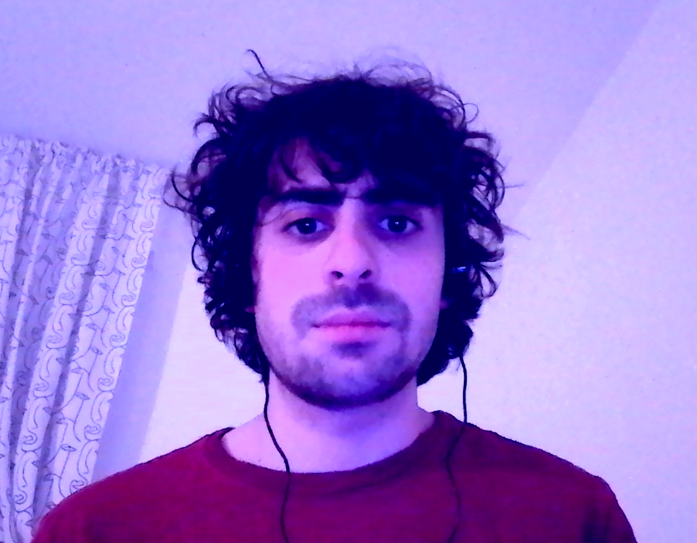

Ciao!
I'm a researcher at Bocconi Institute of Data Science and Analytics (BIDSA) in Milan, Italy.
My research investigates the Statistical Mechanics of Disordered Systems and its multidisciplinary applications.
I am mainly interested in the emergent properties of learning systems, such as memorization and generalization in neural networks and generative models.
Research Interests
- Statistical Mechanics
- Inference and Learning
- Algorithms
- Complex Systems
Academic Background (full CV here)
- 2024 - Present: PostDoc in Physics and Computer Science, Bocconi University.
Supervisor: Prof. Carlo Lucibello. - 2020 - 2023: (Joint) Ph.D. in Theoretical Physics, La Sapienza & École Normale Supérieure.
Supervisors: Profs. Giancarlo Ruocco, Francesco Zamponi.
My Ph.D. thesis is available here. - 2018 - 2020: M.Sc. in Theoretical Physics, La Sapienza.
I spent my second year as an Erasmus student at Sorbonne University.
My M.Sc. thesis is available here. - 2015 - 2018: B.Sc. in Physics, La Sapienza.
Projects
-
Generative Diffusion
Memorization and Generalization in Generative Diffusion
Diffusion models represent the state of the art in image and video generation. These models learn the distribution of the data through a diffusive trajectory in the data-space, the same type of dynamical processes studied by stochastic thermodynamics. Statistical mechanics has recently helped at providing for crucial insights about the complex dynamics with which such models learn the data distribution. We are now studying the learning dynamics in case of stractured training data, i.e. data-points that live on a low dimensional manifold. We are exploiting Random Matrix Theory and the physics of Random Energy Models to answer the following questions:
- Does the structure of the data help reducing overfitting and improving generalization?
- Can we infer the way the model is learning the data-structure by looking at the geometry of the diffusive trajectory?
Physics of Classifier-Free Guidance
Classifier-free Guidance (CFG) is a simple yet effective technique that helps diffusion models follow a user’s prompt. By combining standard unconditional diffusion with diffusion conditioned on a specific class of the data, it steers generation toward samples (e.g. images,videos or text) that more clearly reflect the intended content. We study the sampling dynamics of a diffusion model under CFG based on the statistical mechanics of disordered systems. Specifically, we study the time-dependent transformation of the diffusion potential providing a quantitative prediction of the way a complex target distribution is deformed to improve data generation. Moreover, we leverage our results to propose alternative theory-based guidance schedules that enhance such beneficial effects.
-
Biologically-inspired Neural Networks
The human brain is a complex system that is fascinating scientists since a long time. Its remarkable capabilities include classification of concepts, retrieval of memories and creative generation of new examples. At the same time, modern artificial neural networks are trained on large amounts of data to accomplish the same type of tasks with a considerable degree of precision. By contrast with biological systems, machines appear to be either significantly slow and energetically expensive to train, suggesting the need for a paradigmatic change in statistical learning. We evaluate a known training procedure for recurrent neural networks that can be split into a prior Hebbian learning phase (Learning) and a subsequent anti-Hebbian one (Unlearning). We are progressively proving that this unsupervised prescription is capable of performing classification, memorization and generation of examples with a high degree of efficacy while aligning with some modern biological theories of learning.
Publications (scholar)
- E. Ventura*, B. Achilli, L. Ambrogioni, C. Lucibello. (2026). Generative Distortions in Guided Diffusion Models. In preparation, to be submitted to ICML 2026.
- B. Achilli, L. Ambrogioni, C. Lucibello, M. Mézard, E. Ventura. (2025). The capacity of Modern Hopfield Networks under the Data Manifold Hypothesis. ICLR Workshop on New Frontiers in Associative Memory.
- B. Achilli, L. Ambrogioni, C. Lucibello, M. Mézard, E. Ventura. (2025). Memorization and Generalization in Generative Diffusion under the Manifold Hypothesis. Journal of Statistical Mechanics, 7, 073401.
- E. Ventura*, B. Achilli, G. Silvestri, C. Lucibello, L. Ambrogioni. (2025). Manifolds, Random Matrices and Spectral Gaps: The Geometric Phases of Generative Diffusion. International Conference on Learning Representations (ICLR).
- E. Ventura*, B. Achilli, G. Silvestri, B. Pham, G. Raya, D. Krotov, C. Lucibello, L. Ambrogioni. (2024). Losing dimensions: Geometric memorization in Generative Diffusion. arXiv:2410.08727.
- E. Ventura. (2024). Learning and Unlearning: Bridging classification, memory and generative modeling in Recurrent Neural Networks. IEEE Workshop on Complexity in Engineering (COMPENG), 1–8.
- E. Ventura*, M. Benedetti. (2024). Training neural networks with structured noise improves classification and generalization. Journal of Physics A, 57(41), 5001.
- E. Ventura, S. Cocco, R. Monasson, F. Zamponi. (2024). Unlearning Regularization for Boltzmann Machines. Machine Learning: Science and Technology, 5(2), 025078.
- E. Ventura*, M. Benedetti, E. Marinari, G. Ruocco, F. Zamponi. (2022). Supervised perceptron learning vs unsupervised Hebbian unlearning: Approaching optimal memory retrieval in Hopfield-like networks. The Journal of Chemical Physics, 156, 104107.
(*) first co-author.
Gender (in)equality in Academia
I'm active in studying and divulgating issues relative to gender discrimination and inequalities in academia, especially in the STEM environment.
Here is a series of posters assembled with the Gender Balance Working Group of La Sapienza Physics Department, obtained from comic strips by Did This Really Happen?! and displayed at La Sapienza in Autumn 2023.